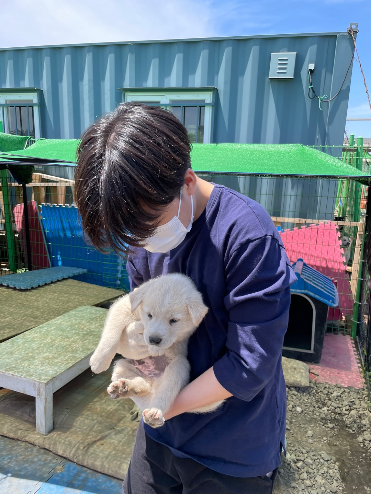
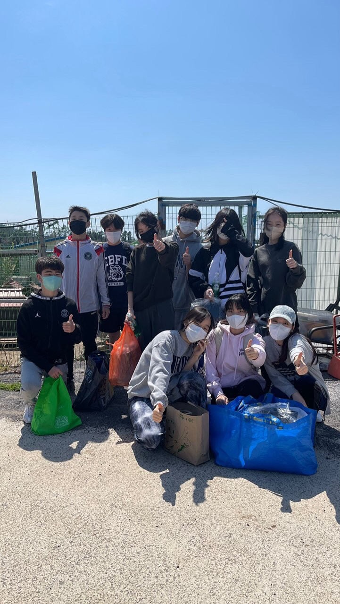
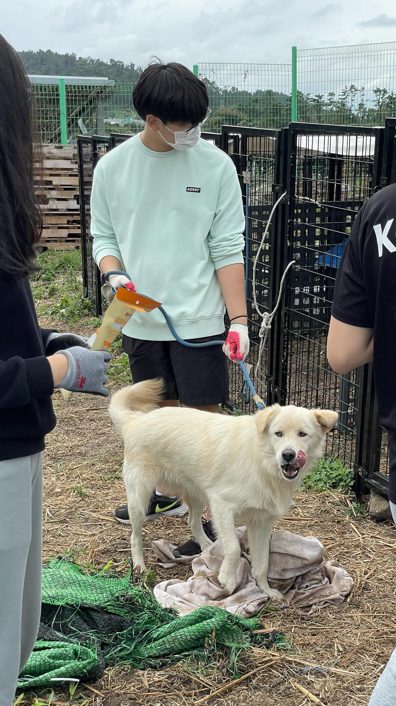
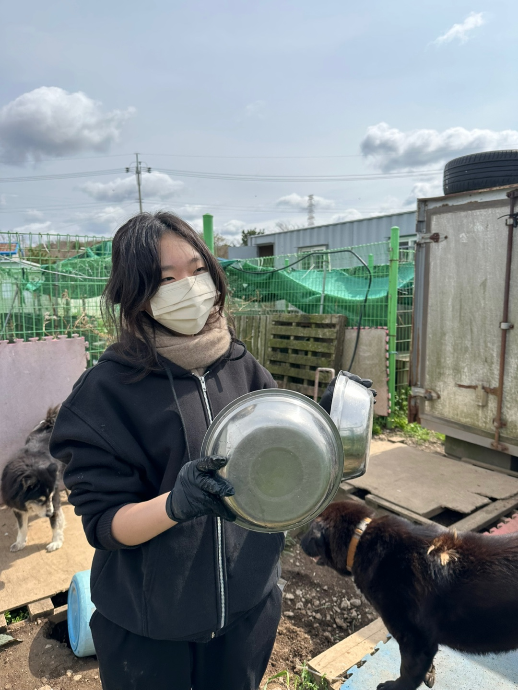

About HADS
HADS is a student led volunteer club based at St Johnsbury Academy Jeju since 2020. Dedicated to supporting abandoned animals across the island. Our members regularly visit local shelters to help with cleaning, walking, feeding, and socializing dogs that are still waiting for a home.
Beyond volunteering, HADS runs iniativies such as FurMatch, FurFlight, ROK9,
Photo highlights
A few moments that capture who we are as a club: students, shelters, and the animals we keep coming back for.

Early stage of founding HADS!

November 22nd 2025, Hallim Animal Shelter.

March 29th 2025, Hallim Animal Shelter.